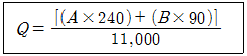
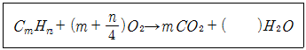

가스기능사 (2008-10-05 기출문제)
1과목: 가스안전관리
1. 도시가스사용시설의 월사용예정량을 산출하는 식이다. 이중 기호 “A"가 의미하는 것은?

- 월사용예정량
- 산업용으로 사용하는 연소기의 명판에 기재된 가스소비량의 합계
- 산업용이 아닌 연소기의 명판에 기재된 가스소비량의 합계
- 가정용 연소기의 가스소비량합계
(정답률: 81%)

2. LPG 충전 · 집단공급 저장시설의 공기에 의한 내압시험 시 상용압력의 일정 압력 이상으로 승압한 후 단계적으로 승압시킬 때 상용압력의 몇 %씩 증가시켜 내압시험압력에 달하도록 하여야 하는가?
- 5
- 10
- 15
- 20
(정답률: 79%)
3. 지상에 액화석유가스(LPG) 저장탱크를 설치할 때 냉각살수장치는 일반적인 경우 그 외면으로부터 몇 m 이상 떨어진 곳에서 조작할 수 있어야 하는가?
- 2
- 3
- 5
- 7
(정답률: 66%)
4. 아세틸렌가스를 제조하기 위한 설비를 설치하고자 할 때 아세틸렌가스가 통하는 부분에 동합금을 사용할 경우 동함유량은 몇 % 이하의 것을 사용하여야 하는가?
- 62
- 72
- 75
- 85
(정답률: 70%)
5. 다음 중 동이나 동합금이 함유된 장치를 사용하였을 때 폭발의 위험성이 가장 큰 가스는?
- 황화수소
- 수소
- 산소
- 아르곤
(정답률: 64%)
6. 전기시설물과의 접촉 등에 의한 사고의 우려가 없는 장소에서 일반도시가스사업자 정압기의 가스방출관 방출구는 지면으로부터 몇 m 이상의 높이에 설치하여야 하는가?
- 1
- 2
- 3
- 5
(정답률: 61%)
7. LPG 사용시설에 사용하는 압력조정기에 대하여 실시하는 각종 시험압력 중 가스의 압력이 가장 높은 것은?
- 1단감압식 저압조정기의 조정압력
- 1단감압식 저압조정기의 출구측 기밀시험압력
- 1단감압식 저압조정기의 출구측 내압시험압력
- 1단감압식 저압조정기의 안전밸브작동개시압력
(정답률: 57%)
8. 다음은 이동식 압축천연가스 자동차충전시설을 점검한 내용이다. 이 중 기준에 부적합한 경우는?
- 이동충전차량과 가스배관구를 연결하는 호스의 길이가 6m이었다.
- 가스배관구 주위에는 가스배관구를 보호하기 위하여 높이 40㎝, 두께 13㎝인 철근콘크리트 구조물이 설치되어 있었다.
- 이동충전차량과 충전설비 사이 거리는 8m이었고, 이동충전차량과 충전설비 사이에 강판제 방호벽이 설치되어 있었다.
- 충전설비 근처 및 충전설비에서 6m 이상 떨어진 장소에 수동 긴급차단장치가 각각 설치되어 있었으며 눈에 잘 띄었다.
(정답률: 55%)
9. 내용적 1,000L 이하인 암모니아를 충전하는 용기를 제조할 때 부식여유의 두께는 몇 ㎜ 이상으로 하여야 하는가?
- 1
- 2
- 3
- 5
(정답률: 42%)
10. 고압가스 운반기준에 대한 설명 중 틀린 것은?
- 밸브가 돌출한 충전용기는 고정식 프로텍터나 캡을 부착하여 밸브의 손상을 방지한다.
- 충전용기를 운반할 때 넘어짐 등으로 인한 충격을 방지하기 위하여 충전용기를 단단하게 묶는다.
- 위험물안전관리법이 정하는 위험물과 충전용기를 동일 차량에 적재 시는 1m정도 이격시킨 후 운반한다.
- 염소와 아세틸렌 · 암모니아 또는 수소는 동일차량에 적재하여 운반하지 않는다.
(정답률: 77%)
11. 다음 용기종류별 부속품의 기호가 옳지 않은 것은?
- 저온용기의 부속품 : LT
- 압축가스 충전용기 부속품 : PG
- 액화가스 충전용기 부속품 : LPG
- 아세틸렌가스 충전용기 부속품 : AG
(정답률: 74%)
12. 다음 독성가스의 제독제로 가성소다 수용액이 사용되지 않는 것은?
- 포스겐
- 염화메탄
- 시안화수소
- 아황산가스
(정답률: 52%)
13. 가연성가스를 취급하는 장소에는 누출된 가스의 폭발사고를 방지하기 위하여 전기설비를 방폭구조로 한다. 다음 중 방폭구조가 아닌 것은?
- 안전증 방폭구조
- 내열 방폭구조
- 압력 방폭구조
- 내압 방폭구조
(정답률: 73%)
14. 특정고압가스 사용시설의 시설기준 및 기술기준으로 틀린 것은?
- 저장시설의 주위에는 보기 쉽게 경계표지를 할 것
- 사용시설은 습기 등으로 인한 부식을 방지하는 조치를 할 것
- 독성가스의 감압설비와 그 가스의 반응설비간의 배관에는 일류방지장치를 할 것
- 고압가스의 저장량이 300kg 이상인 용기보관실의 벽은 방호벽으로 할 것
(정답률: 69%)
15. 우리나라도 지진으로부터 안전한 지역이 아니라는 판단하에 고압가스 설비를 설치할 때에는 내진설계를 하도록 의무화하고 있다. 다음 중 내진설계 대상이 아닌 것은?
- 동체부의 높이가 3m인 증류탑
- 저장능력이 1,000m3인 수소 저장탱크
- 저장능력이 5톤인 염소 저장탱크
- 저장능력이 10톤인 액화질소 저장탱크
(정답률: 50%)
16. 다음 중 가연성이며 독성가스인 것은?
- NH3
- H2
- CH4
- N2
(정답률: 90%)
17. 일반도시가스사업의 가스공급시설 중 최고 사용압력이 저압인 유수식 가스홀더에서 갖추어야 할 기준이 아닌 것은?
- 가스 방출장치를 설치한 것일 것
- 봉수의 동결방지 조치를 한 것일 것
- 모든 관의 입·출구에는 반드시 신축을 흡수하는 조치를 할 것
- 수조에 물공급관과 물넘쳐 빠지는 구멍을 설치한 것일 것
(정답률: 58%)
18. 고압가스 운반 시 사고가 발생하여 가스 누출부분의 수리가 불가능한 경우의 조치사항으로 틀린 것은?
- 상황에 따라 안전한 장소로 운반할 것
- 착화된 경우 용기 파열 등의 위험이 없다고 인정될 때는 그대로 둘 것
- 독성가스가 누출할 경우에는 가스를 제독할 것
- 비상연락망에 따라 관계 업소에 원조를 의뢰할 것
(정답률: 77%)
19. 액화암모니아 50kg을 충전하기 위하여 용기의 내용적은 몇 L로 하여야 하는가? (단, 암모니아의 정수 C는 1.86이다.)
- 27
- 40
- 70
- 93
(정답률: 49%)
20. LP가스가 충전된 납붙임 용기 또는 접합용기는 얼마의 온도범위에서 가스누출 시험을 할 수 있는 온수시험탱크를 갖추어야 하는가?
- 20℃ 이상, 32℃ 미만
- 35℃ 이상, 45℃ 미만
- 46℃ 이상, 50℃ 미만
- 52℃ 이상, 60℃ 미만
(정답률: 58%)
21. 액화석유가스 충전사업시설 중 두 저장탱크의 최대직경을 합산한 길이의 1/4이 0.5m일 경우에 저장탱크 간의 거리는 몇 m 이상을 유지하여야 하는가?
- 0.5
- 1
- 2
- 3
(정답률: 48%)
22. 다음 중 초저온용기에 대한 신규검사항목에 해당되지 않는 것은?
- 압궤시험
- 다공도시험
- 단열성능시험
- 용접부에 관한 방사선검사
(정답률: 44%)
23. 다음 중 고압가스관련설비가 아닌 것은?
- 일반압축가스배관용 밸브
- 자동차용 압축천연가스 완속충전설비
- 액화석유가스용 용기잔류가스회수장치
- 안전밸브, 긴급차단장치, 역화방지장치
(정답률: 67%)
24. 고압가스 용기의 어깨부근에 “FP : 15MPa" 라고 표기되어 있다. 이 의미를 옳게 설명한 것은?
- 사용압력이 15MPa이다.
- 설계압력이 15MPa이다.
- 내압시험압력이 15MPa이다.
- 최고충전압력이 15MPa이다.
(정답률: 70%)
25. 저장탱크의 방류둑 용량은 저장능력 상당용적 이상의 용적이어야 한다. 다만, 액화산소 저장탱크의 경우에는 저장능력 상당용적의 몇 %용량 이상으로 할 수 있는가?
- 40
- 60
- 80
- 90
(정답률: 63%)
26. 가연성 액화가스를 충전하여 200km를 초과하여 운반할 경우 몇 kg 이상일 때 운반책임자를 동승시켜야 하는가?
- 1,000
- 2,000
- 3,000
- 6,000
(정답률: 59%)
27. 프로판가스의 위험도(H)는 약 얼마인가? (단, 공기 중의 폭발범위는 2.1~9.5v%이다.)
- 2.1
- 3.5
- 9.5
- 11.6
(정답률: 71%)
28. 아세틸렌가스 또는 압력이 9.8MPa 이상인 압축가스를 용기에 충전하는 경우에 압축기와 그 충전장소 사이에 다음 중 반드시 설치하여야 하는 것은?
- 가스방출장치
- 안전밸브
- 방호벽
- 압력계와 액면계
(정답률: 59%)
29. 방류둑 내측 및 그 외면으로부터 몇 m이내에는 그 저장탱크의 부속설비 외의 것을 설치하지 않아야 하는가? (단, 저장능력이 2천톤인 가연성 저장탱크시설이다.)
- 10
- 15
- 20
- 25
(정답률: 55%)
30. 카바이트(CaC2) 저장 및 취급 시의 주의사항으로 옳지 않은 것은?
- 습기가 있는 곳을 피할 것
- 보관 드럼통은 조심스럽게 취급할 것
- 저장실은 밀폐구조로 바람의 경로가 없도록 할 것
- 인화성, 가연성 물질과 혼합하여 적재하지 말 것
(정답률: 85%)
2과목: 가스장치 및 기기
31. 도시가스에는 가스 누출 시 신속한 인지를 위해 냄새가나는 물질(부취제)를 첨가하고, 정기적으로 농도를 측정하도록 하고 있다. 다음 중 농도측정방법이 아닌 것은?
- 오더(Odor)미터법
- 주사기법
- 냄새주머니법
- 헴펠(Hempel)법
(정답률: 56%)
32. 다음 배관 부속품 중 유니온 대용으로 사용할 수 있는 것은?
- 엘보우
- 플랜지
- 리듀서
- 부싱
(정답률: 72%)
33. LP가스 용기로서 갖추어야 할 조건으로 틀린 것은?
- 사용 중에 견딜 수 있는 연성, 인장강도가 있을 것
- 충분한 내식성, 내마모성이 있을 것
- 완성된 용기는 균열, 뒤틀림, 찌그러짐 기타 해로운 결함이 없을 것
- 중량이면서 충분한 강도를 가질 것
(정답률: 70%)
34. 회전펌프의 일반적인 특징으로 틀린 것은?
- 토출압력이 높다.
- 흡입 양정이 작다.
- 연속회전하므로 토출액의 맥동이 적다.
- 점성이 있는 액체에 대해서도 성능이 좋다.
(정답률: 35%)
35. 산소용기의 최고 충전압력이 15MPa일 때, 이 용기의 내압 시험압력은 얼마인가?
- 15MPa
- 20MPa
- 22.5MPa
- 25MPa
(정답률: 36%)
36. 분석법 중 "쌍극자모멘트의 알짜변화, 진동 짝지움, Nernst 백열등, Fourier 변환분광계"와 관계있는 것은?
- 질량분석법
- 흡광광도법
- 적외선 분광분석법
- 킬레이트 적정법
(정답률: 69%)
37. 다음 중 벨로우즈식 압력측정 장치와 가장 관계가 있는 것은?
- 피스톤식
- 전기식
- 액체 봉입식
- 탄성식
(정답률: 54%)
38. 세라믹버너를 사용하는 연소기에 반드시 부착하여야 하는 것은?
- 가버너
- 과열방지장치
- 산소결핍안전장치
- 전도안전장치
(정답률: 45%)
39. 도로에 매설된 도시가스 배관의 누출여부를 검사하는 장비로서 적외선 흡광특성을 이용한 가스누출검지기는?
- FID
- OMD
- CO 검지기
- 반도체식 검지기
(정답률: 45%)
40. 다음 중 전기방식법에 속하지 않는 것은?
- 희생양극법
- 외부전원법
- 배류법
- 피복방식법
(정답률: 54%)
41. “압축된 가스를 단열 팽창시키면 온도가 강하한다.” 는 것은 무슨 효과라고 하는가?
- 단열효과
- 주울-톰슨효과
- 정류효과
- 팽윤효과
(정답률: 79%)
42. 왕복식 압축기에서 피스톤과 크랭크 샤프트를 연결하여 왕복운동을 시키는 역할을 하는 것은?
- 크랭크
- 피스톤링
- 커넥팅로드
- 톱클리어런스
(정답률: 72%)
43. 액화가스의 비중이 0.8, 배관직경이 50㎜이고, 시간당 유량이 15톤일 때 배관내의 평균 유속은 약 몇 m/s인가?
- 1.80
- 2.66
- 7.56
- 8.52
(정답률: 41%)
44. 다음 중 구리판, 알루미늄판 등 판재의 연성을 시험하는 방법은?
- 인장시험
- 크리프시험
- 에릭션시험
- 토션시험
(정답률: 31%)
45. 다음 중 액면계의 측정방식에 해당하지 않는 것은?
- 압력식
- 정전용량식
- 초음파식
- 환상천평식
(정답률: 70%)
3과목: 가스일반
46. 국제단위계는 7가지의 SI기본단위로 구성된다. 다음 중 기본량과 SI기본단위가 틀리게 짝지어진 것은?
- 질량 - 킬로그램(kg)
- 길이 - 미터(m)
- 시간 - 초(s)
- 몰질량 - 몰(mole)
(정답률: 55%)
47. 공기 중에서 폭발하한이 가장 낮은 탄화수소는?
- CH4
- C4H10
- C3H8
- C2H6
(정답률: 59%)
48. 표준상태에서 염소가스의 증기비중은 약 얼마인가?
- 0.5
- 1.5
- 2.0
- 2.4
(정답률: 33%)
49. 다음 가스 중 표준상태에서 공기보다 가벼운 것은?
- 메탄
- 에탄
- 프로판
- 프로필렌
(정답률: 71%)
50. 샤를의 법칙에서 기체의 압력이 일정할 때 모든 기체의 부피는 온도가 1℃ 상승함에 따라 0℃ 때의 부피보다 어떻게 되는가?
- 22.4배씩 증가한다.
- 22.4배씩 감소한다.
- 1/273씩 증가한다.
- 1/273씩 감소한다.
(정답률: 78%)
51. 다음은 탄화수소(CmHn)의 완전연소식이다. ( ) 안에 알맞은 것은?

- n
- n/2
- m
- m/2
(정답률: 64%)
52. 다음 중 표준대기압으로 틀린 것은?
- 1.0332kg/cm2
- 1013.2bar
- 10.332mH2O
- 76cmHg
(정답률: 51%)
53. 다음 각 가스의 특성에 대한 설명으로 틀린 것은?
- 수소는 고온, 고압에서 탄소강과 반응하여 수소취성을 일으킨다.
- 산소는 공기액화 분리장치를 통해 제조하며, 질소와 분리 시 비등점 차이를 이용한다.
- 일산화탄소의 국내 독성 허용농도는 LC50 기준으로 50ppm이다.
- 암모니아는 붉은 리트머스를 푸르게 변화시키는 성질 을 이용하여 검출할 수 있다.
(정답률: 59%)
54. 다음 중 이상기체상수 R값이 1.987일 때 이에 해당되는 단위는?
- J/mol·K
- atm·L/mol·K
- cal/mol·K
- N·m/mol·K
(정답률: 40%)
55. 섭씨온도로 측정할 때 상승된 온도가 5℃ 이었다. 이 때 화씨온도로 측정하면 상승온도는 몇 도인가?
- 7.5
- 8.3
- 9.0
- 41
(정답률: 62%)
56. 부탄 1m3을 완전 연소시키는데 필요한 이론 공기량은 약 몇 m3인가? (단, 공기 중의 산소농도는 21v%이다.)
- 5
- 23.8
- 6.5
- 31
(정답률: 32%)
57. 메탄(CH4)의 성질에 대한 설명 중 틀린 것은?
- 무색, 무극의 기체로 잘 연소한다.
- 무극성이며 물에 대한 용해도가 크다.
- 염소와 반응시키면 염소화합물을 만든다.
- 니켈 촉매하에 고온에서 산소 또는 수증기를 반응시키면 CO와 H2를 발생한다.
(정답률: 46%)
58. 물을 전기분해하여 수소를 얻고자 할 때 주로 사용되는 전해액은 무엇인가?
- 25% 정도의 황산수용액
- 1% 정도의 묽은 염산수용액
- 10% 정도의 탄산칼슘수용액
- 20% 정도의 수산화나트륨수용액
(정답률: 58%)
59. 다음 중 LP가스의 제조법이 아닌 것은?
- 석유정제공정으로부터 제조
- 일산화탄소의 전환법에 의해 제조
- 나프타 분해 생성물로부터의 제조
- 습성천연가스 및 원유로부터의 제조
(정답률: 48%)
60. 하버-보시법으로 암모니아 44g을 제조하려면 표준상태에서 수소는 약 몇 L가 필요한가?
- 22
- 44
- 87
- 100
(정답률: 59%)